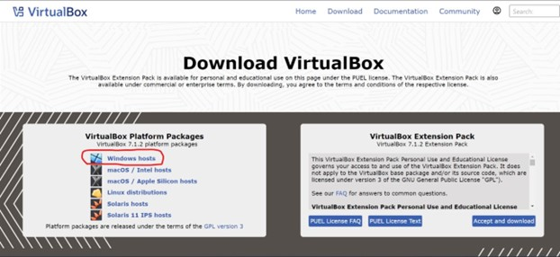
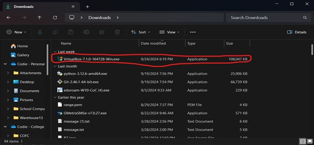
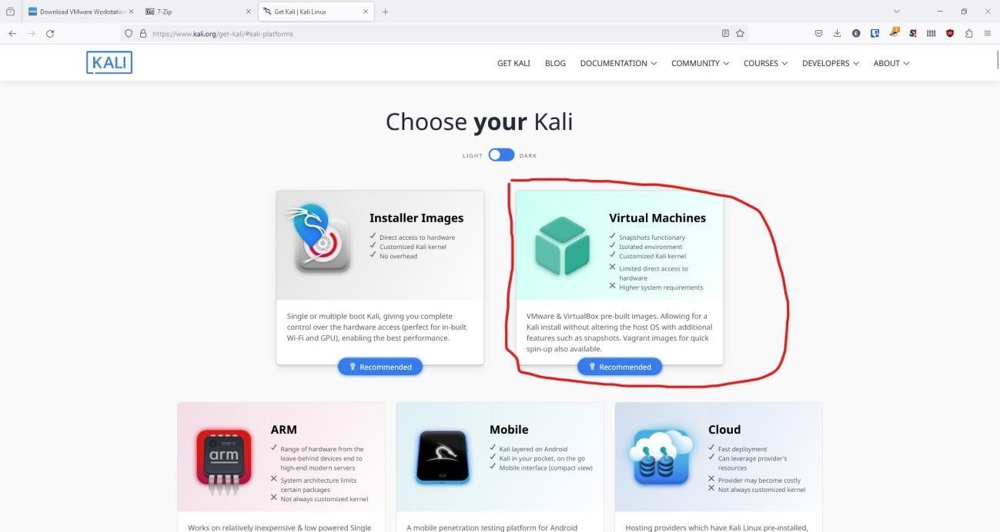
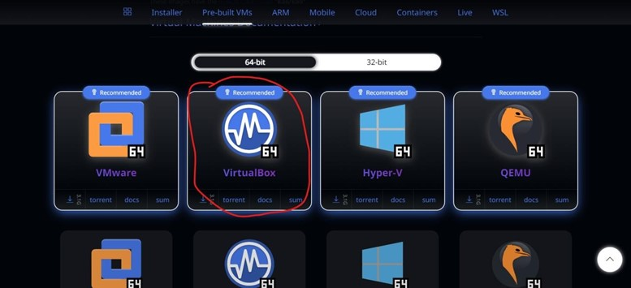
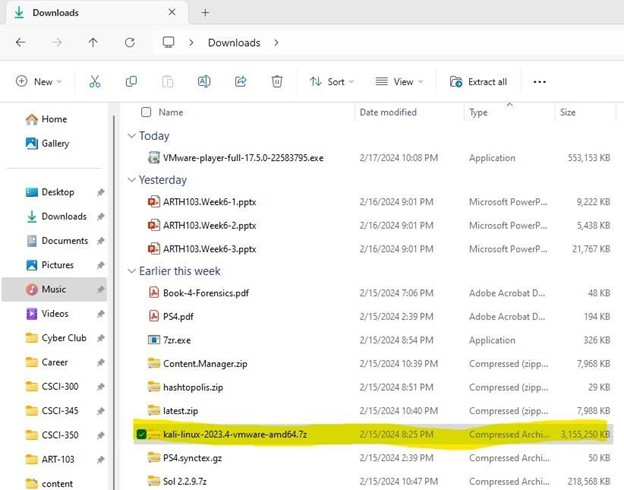

Windows Virtual Machine Installation Guide
For Windows
Step 1:
First install Virtual Box (this will be the software that will run the virtual machines)
Link: https://www.virtualbox.org/wiki/Downloads

Click the download button that is circled above. Once installed double click the file circle below.

Then follow all prompts provided by Virtual Box.
Step 2: Install 7-Zip
We need to install 7-ZIP to extract a download that was compressed using 7-ZIP. This is the same concept as regular ZIP folders you are used to using, just using a different software to ZIP the files. We can download and install it using the link below.
Link: https://7-zip.org/

Then double click on the 7zr.exe file and follow the prompts to install 7-ZIP.
Step 3: Install the Kali Linux prebuilt Virtual Machine
Next, we will download the actual operating system we are wanting to use. This operating system is a version of Debian Linux that is specifically made for cyber security. It comes preinstalled with many tools that we will use in the club and especially for those who are interested in competitions. We will go to the website and download the correct version.
Link: https://www.kali.org/get-kali/#kali-platforms
We want to install the premade virtual machine from Kali Linux. To do this go to the link and select “virtual machines” circled below:

Once there you should see the page below. We then want to click on the download corresponding to the VirtualBox circled below:

This will begin downloading the Kali Linux operating system. This download is around 3 gigabytes in size so it will take some time depending on your internet connection. Once installed it is very important to make sure that your download looks like this shown below. If it does not you may have downloaded the incorrect files. Double check you got the file shown below:

Once it is, you are good to go! We will finish the rest of the installation on Tuesday. If you have any questions, please message any of the club officers on Discord!
=^._.^=